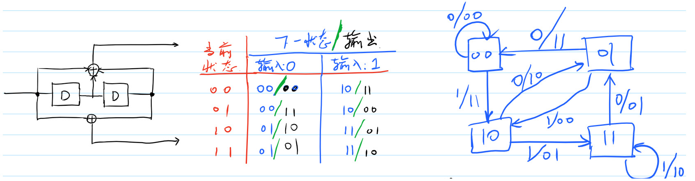
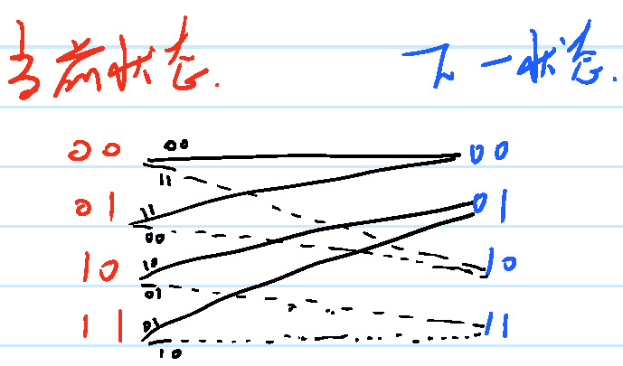
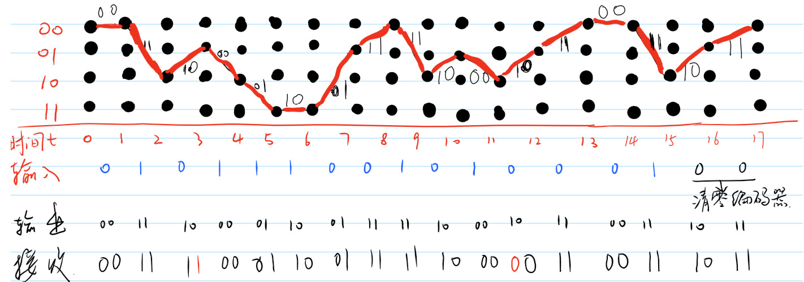
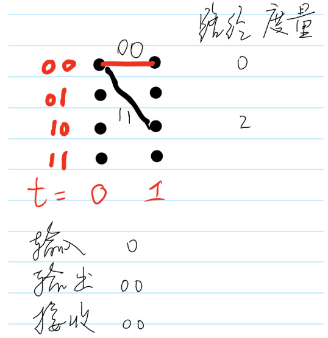
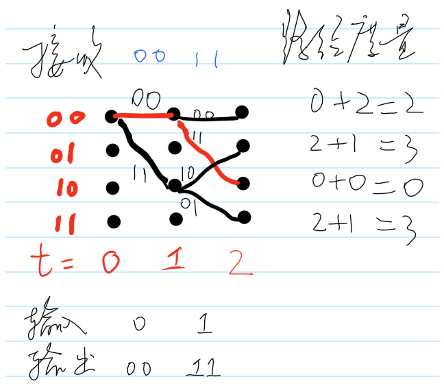
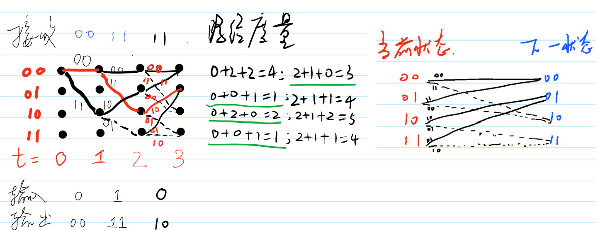
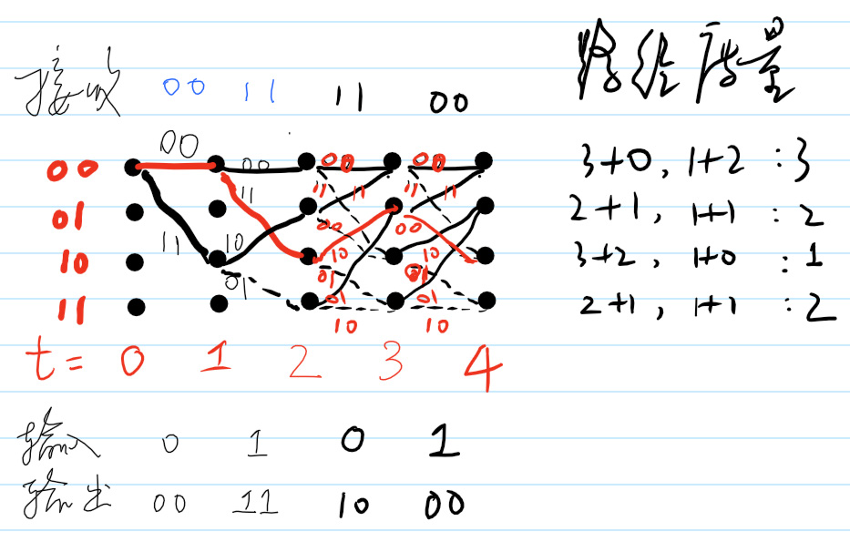

卷积编码和Viterbi译码
1 引言
1965年，Peter Elias发明卷积码。1967年，Andrew J. Viterbi（高通的创始人之一）发明了一种高效的译码算法：Viterbi算法。Viterbi译码器可能是当前应用最广泛的一种卷积译码器。2005年，G. David Forney在南加州大学的Viterbi Conference上提到：每秒，全世界的Viterbi译码器恢复的的二进制比特数是 \(10^{15}\)。今天，我们来看看viterbi译码器如何实现译码。
2 编码
译码之前，先看如何卷积编码。描述卷积编码器的方法有很多，按照每种描述，我们都可以实现卷积编码。以约束长度为3，码率为1/2，生成多项式为 \(g_{0} = [1\quad 1\quad 1],g_{1}=[1 \quad 0 \quad 1]\)的卷积码为例，图1左侧给出了移位寄存器电路图表示，图1 中间的表格是左侧的等价描述，显然左侧的表示更直观，中间的表述更具体。图1 右侧是等效的状态机表示。

图 1: 卷积编码器的三种描述：移位寄存器，输入输出状态表和状态机
卷积编码器还有一种描述：篱笆图描述。篱笆图让Viterbi译码过程生动了许多，我认为是一个很伟大的发明，其作用和法拉力用磁感线表示磁场的存在一样，让难以理解的抽象过程瞬间活灵活现。另外，在Turbo码的译码分析过程中，篱笆图也发挥着非常重要的作用。图1 所示的卷积码可以表示如图2所示。

图 2: 卷积编码器篱笆图描述
通过对篱笆图2进行时间上的延展，给定输入，我们可以很容易获得输出。假设输入为
\begin{equation} \label{eq:1} (010111001010001)_{2} \end{equation}则编码输出为
\begin{equation} \label{eq:2} (001110000110011111100010110011)_{2} \end{equation}输出的获得过程如图3所示。值得注意的是，在图3中， \(t=16\)和\(t=17\)时刻依然有0输入。这两个0的作用是冲洗编码器，使得编码器的状态归零。这样做的好处是Viterbi译码器知道编码器的最后一个状态是零状态。稍后我们会看到，Viterbi译码器译码有一个回溯的过程，如果知道编码器的最后一个状态是零状态，就避免了译码器瞎猜一个状态回溯，降低译码器的复杂度，尤其是减低了对内存的需求。稍后阐述译码过程时，我们会看到两个0的作用。在商用的通信协议中，比如3G和4G相关的协议，无论是采用Turbo码还是卷积码，都有译码器状态清零的操作。

图 3: 针对输入序列利用篱笆图获得输出
图3中的那条黑色路径就是编码器输入比特序列在编码器中留下的足迹。在图3 中，由于\(t=0\)时刻状态为00，从\(t=0\)到\(t=1\)，只有两条路径可走：从00到00（输入为0）；从00到10（输入为1）。从\(t=1\)到\(t=2\)有四条路径可走：从00和10出发各有两条路径。所以，在\(t,t>1\)时刻，编码器可能走过的路径有\(2^t\)。
Viterbi译码器译码就是根据收到的二进制比特，从最后一个状态回溯过程，找到最可能的哪条路径的过程。有点按图索骥的感觉。只不过由于信道的干扰，译码器不确定收到的序列是从哪条路径走过来生成的。所以译码器需要保留多条可能的路径，比较一番，选择最可能的那条路径。
接下来，我们就“按图索骥”，逐步演示Viterbi译码器的工作过程。每一个篱笆图都是我用onenote和Surface的触控笔做得。如果你之前没有这么一步一步的推演Viterbi译码过程，强烈建议你和我一样用纸和笔亲自画一遍。
3 译码
由于信道的不理想特性（比如衰落和噪声的存在），编码器输出到达接收端总是要经历一定程度的畸变，变得和发射的符号不一样。在图4中，接收符号在两个位置与发射比特不一致。

图 4: 信道的不确定性导致接收比特和编码器输出比特不一致
每次我们收到一对经过信道的编码比特，都要与篱笆图上可能的状态转换输出的一对二进制比特比较，并计算汉明距离（就是看看有几个位置不一样）。显然，距离越近的就越像。
首先，当\(t=1\)时，接收到的符号为00。Viterbi译码器状态如图5所示。

图 5: \(t=1\)时的Viterbi译码器状态
图5中，路径度量表示汉明距离的累积，由于目前只走了一步，所以汉明距离的累积就是这一步的汉明距离：分别是0和2。
当\(t=2\)时，接收到的符号为11。Viterbi译码器状态如图6 所示，图中用红色标示了最小路径度量的轨迹。另外\(t=2\)时，编码器的四个状态都有路径到达。从此以后，每个状态都有两个可能状态跳转而来。

图 6: \(t=2\)时的Viterbi译码器状态
当\(t=3\)时，接收到的符号为11。如图7所示，每一个\(t=3\)时的状态都有两个\(t=2\)时的状态可以到达。所以\(t=3\)时需要比较八条路径的度量。此时路径上的输出太密，写不下，我把当前状态到下一状态的篱笆图附到右边便于查看。

图 7: \(t=3\)时的Viterbi译码器状态
需要注意的是，第三对收到的二进制比特与发射的二进制比特有一个不同（发生了错误）。路径度量的计算结果中有两个最小的度量1，图7用红色标示了正确的路径，但是要记住还有一条路径的度量也是1。现在，接收机还不能判断收到的11是不是发射符号，即，译码器不确定从\(t=2\)到\(t=3\)发射端发射的是0还是1。只有当越来越多的二进制比特对到达译码器，译码器才能可靠的判断到底哪一条路径是正确的路径。
我们接着往下看。当\(t=4\)时Viterbi译码器的状态如图8所示。从图中可以看出只有一条路径的度量最小为1，该路径也是编码器编码过程中所使用的路径。此时我们可以看出\(t=3\) 时的接收符号错误已经得到了纠正。

图 8: \(t=4\)时的Viterbi译码器状态
我们可以一直这么将篱笆图画下去，但是我不会这么做。我们直接来看看\(t=17\)时，接收机收到的篱笆图，如图所示。
图 9: \(t=17\)时的Viterbi译码器状态
可以看出，图9和图4相同。这意味着Viterbi译码器找到了编码器走过的路，意味着接收符号序列中的两个错误没有对译码器正确译码造成影响，意味着译码器能克服信道对发送符号造成的这两次畸变。
当我们得到图9时，整个译码过程还差一步就完成了。接下来我们要做的就是根据图1或者图2来找到最后这条路径上对应的输入比特即可。这一步做回溯。
4 回溯
单独开一章讨论回溯过程。从图5到图9的过程中，每一次都记录了到达四个状态的l最小累计分支度量。对于本文给出的例子中一共记录了15个信息比特和2个清理比特对应的最小累计度量，这些最小累计分支度量如表1所示。
| 时间 | 0 | 1 | 2 | 3 | 4 | 5 | 6 | 7 | 8 | 9 | 10 | 11 | 12 | 13 | 14 | 15 | 16 | 17 |
|---|---|---|---|---|---|---|---|---|---|---|---|---|---|---|---|---|---|---|
| 状态00 | 0 | 2 | 3 | 3 | 3 | 3 | 4 | 1 | 3 | 4 | 3 | 3 | 2 | 2 | 4 | 5 | 2 | |
| 状态01 | 3 | 1 | 2 | 2 | 3 | 1 | 4 | 4 | 1 | 4 | 2 | 3 | 4 | 4 | 2 | |||
| 状态10 | 2 | 0 | 2 | 1 | 3 | 3 | 4 | 3 | 1 | 4 | 1 | 4 | 3 | 3 | 2 | |||
| 状态11 | 3 | 1 | 2 | 1 | 1 | 3 | 4 | 4 | 3 | 4 | 2 | 3 | 4 | 4 |
有意思的是，当\(t=16\)和\(t=17\)时, 最小累计度量和接收符号中错误比特的个数相同都是2. 从表1中我们知道了在\(t\)时刻，到达该状态的最小累计度量。我们还需要知道：在\(t\)时刻，到达该状态的前一个幸存状态是对少。比如在表1中，\(t=9\)时刻的状态10对应的最小分支度量是1，而\(t=9\)时刻的状态10是\(t=8\)时刻的状态00通过输入1跳转过来的，而不是状态01通过输入1跳转过来的。如果我们把表1中每一列中的最小值前后连起来，会发现，这条线和图9中的线几乎吻合。
为什么用“几乎”而不是“完全”? 从 \(t=17\)回溯到 \(t=13\)都很顺利，因为在表1中第13列到17列都只有一个最小分支度量，但是第12列却有两个最小分支度量2. 第13列的2是从12列的状态01对应的2跳转过来的还是从第12列的状态11跳转过来的呢？显然，结合编码器跳结构，我们知道只有从状态01才能一步跳转到状态00（通过输入0），从状态11无论如何一步也跳不到状态00. 同理从第4列跳转到第3列，第4列的最小度量1在状态10的位置，而第三列有两个最小分支度量1，分别位于状态01和状态11，我们知道只有状态01能一步跳转到状态10（通过输入1），而状态11无论如何也不能一步跳转到状态10.
| 时间 | 0 | 1 | 2 | 3 | 4 | 5 | 6 | 7 | 8 | 9 | 10 | 11 | 12 | 13 | 14 | 15 | 16 | 17 |
|---|---|---|---|---|---|---|---|---|---|---|---|---|---|---|---|---|---|---|
| 状态00 | 0 | 0 | 0 | 1 | 0 | 1 | 1 | 0 | 1 | 0 | 0 | 1 | 0 | 1 | 0 | 0 | 0 | 1 |
| 状态01 | 2 | 2 | 3 | 3 | 2 | 3 | 3 | 2 | 2 | 3 | 2 | 3 | 2 | 2 | 2 | |||
| 状态10 | 0 | 0 | 0 | 1 | 1 | 1 | 0 | 1 | 0 | 0 | 1 | 1 | 0 | 1 | 0 | |||
| 状态11 | 2 | 2 | 3 | 2 | 3 | 2 | 3 | 2 | 2 | 3 | 2 | 3 | 2 | 2 |
结合表1 和表2 我们可以得到图9中红线所示的幸存路径对应的前后状态转换，如表3所示。
| 时间 | 0 | 1 | 2 | 3 | 4 | 5 | 6 | 7 | 8 | 9 | 10 | 11 | 12 | 13 | 14 | 15 | 16 | 17 |
|---|---|---|---|---|---|---|---|---|---|---|---|---|---|---|---|---|---|---|
| 0 | 0 | 2 | 1 | 2 | 3 | 3 | 1 | 0 | 2 | 1 | 2 | 1 | 0 | 0 | 2 | 1 | 0 |
有了表3，我们就可以顺藤摸瓜，沿着篱笆图把状态转换对应的输入比特找出来，这些输入比特就是译码输出序列。
可以看到，译码输出的信息比特序列为
\begin{equation} \label{eq:3} (01011100101000100)_{2} \end{equation}去掉两个尾比特，得到译码输出：
\begin{equation} \label{eq:4} (010111001010001)_{2} \end{equation}现在我们回顾一下Viterbi译码器工作的关键步骤。
5 尾声
本文逐步为大家演示了Viterbi译码的整个过程，关于Viterbi的理论分析还请阅读相关的参考文献，比如David Forney经典的《the Viterb Algorithm》，详细的理论分析不是此文的重点。最后我想提两个问题（或许你早已想到）
- 在介绍译码过程中，我们把接收到的17对二进制比特全部送进译码器，计算累计路径度量，然后回溯，比较累计路径度量的大小，选择最小的那个路径。倘若输入译码器的二进制比特序列特别长，不是17对而是几千对，表1和表2 就会变得特别大。怎么办？
- 你听说过软判决么？如果Viterbi译码器的输入是软判决的输出，Viterbi译码器的性能会不会更好一些呢？
提示：以上两个问题都可以在我的博客中找到比较详细的解答,:)